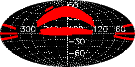
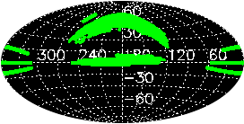
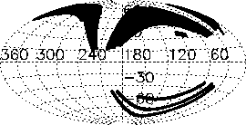
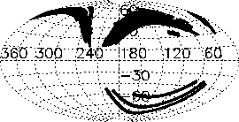

The DR3 contains that part of the SDSS imaging and spectroscopy taken through July 2003. Here we give coverage plots and the detailed coverage tables from which they were constructed. Further below, we outline the future sky coverage of SDSS. The survey terms are explained in the sections on imaging coverage and spectroscopic coverage below.
For data interfaces, see the data access page.
| Equatorial |  |  |
| Imaging (ps) | Spectroscopy (ps) | |
| Galactic |  |  |
| Imaging (ps) | Spectroscopy (ps) |
For reference, the coverage tables describe the sky coverage in terms of survey coordinates. To translate the sky coverage into celestial coordinates, please refer to the coordinates section of the EDR paper and the description below.
Note: The coverage tables, and a number of other files we distribute, are given as ASCII parameter (.par) files.
| SDSS entire survey | atStripeDef.par (survey coordinates) |
|---|---|
| Best | tsChunk.dr3.best.par (great circle coordinates) - see Target and Best below |
| Target | tsChunk.dr3.target.par (great circle coordinates) - see Target and Best below |
| Spectroscopy | dr3spectro.par (plate centers by plate number and MJD of observation) |
Note also the list of list of quality "holes" (small areas of bad seeing etc.) and missing data, the list of fields which are missing only apparently (e.g., data from different runs were used in target and best) and the list of differences in sky coverage between target and best.
The survey coverage is defined in survey coordinates, as described in the coordinates section of the EDR paper. For detailed astrometry please see the following note about parts of the survey which have a slightly different survey coordinate system from the rest.
The imaging survey scans the sky along great circles, which are circles of constant survey latitude eta. Scans are obtained along stripes spaced 2.5° in survey latitude. Each stripe has an integer stripe number n such that the inclination of a stripe with respect to the celestial equator is -25° + 2.5° × n. The boundaries of the region eventually to be surveyed by the SDSS are defined in terms of survey longitude lambda in atStripeDef.par.
An imaging run designates a continuous scan of the imaging telescope along a stripe. The survey camera's focal plane has six columns of CCDs, so that a single run consists of six camera columns (camcols) (see the instrument descriptions). The camera columns have a gap which is filled by an offset second run. The six camcols taken together are called a strip. Thus to completely cover the two strips making up one stripe, at least two runs are required. The imaging data reduction is done on a run-by-run basis, hence the imaging data in our Data Archive are accessible by run number.
Every stripe has its own great circle coordinate system. The coordinate along a great circle is called mu. The range of data actually obtained for a given stripe is reported in terms of a range in great circle mu along that stripe as startMu and endMu in the coverage tables above. Both startMu and endMu are given in integer arcseconds.
The calibrated object lists are accessible in the archive by stripe number and startMu on that stripe.
For historical reasons, DR1 contained both photometric and
spectroscopic data which lay outside the official survey limits, i.e.,
the startMu/endMu for some runs extend beyond the
lambda limits for the stripes they cover. Since DR3,
only the target data in those areas are still marked
non-primary, but the best data are primary. Please
refer to this note about DR3 data
outside the SDSS survey area for details on how to retrieve
these.
A run is divided into images 2048 pix × 1361 pix which are called fields. Each field then has the first 128 rows of the following field attached to it, so that all survey images actually have a size of 2048 pix × 1489 pix.
Object detection, photometry and classification are done field by field. In particular, the calibrated object lists and survey images are distributed separately for each field. To account for the overlap, object detection is not performed on the first 64 rows or the last 64 rows of each corrected frame.
Note that one therefore should use only objects in
the "primary" area of
each survey field, in order to avoid duplicate area and duplicate
object detections. Near the center of a stripe, the primary area will
be the full 2048 pix × 1361 pix, but frames overlap near the
ends of stripes, reducing the primary area there. Please refer to how
"primary" is set in
the "status" flag of an object and please also see the details of
how overlapping areas are
resolved. The primary area of each field is recorded as entry
stripeArea in the tsField*.fit file
Every time we (re)process our imaging data, we assign the outputs a new rerun number. Thus, a rerun does not imply re-observation, but is simply a re-reduction of the same run. The re-reduction can use more recent software or calibrations than a previous rerun, or both. Across runs, the rerun is an arbitrary index, so the same rerun of different runs does not have to be produced with the same software or calibrations.
startmu
<= mu <= endmu). These were used
to create the plots above.Current and anticipated sky coverage of SDSS (Aitoff projection of equatorial coordinates as above, but centered at RA=120).
The plot above shows the current and anticipated sky coverage of the spectroscopic survey (also see the SDSS data release schedule). The solid outline shows the original survey ellipse in the North Galactic Cap as defined above. Dark areas show the coverage of DR3. Light areas show spectroscopic sky coverage expected at the end of the currently funded survey in June 2005 (to be relased in full in 2006). As DR3 includes only data collected up through June 2003, data for part of the light areas are alrady in hand. The imaging survey leads the spectroscopic survey and will therefore not leave a gap in the sky coverage of the North Galactic Cap. Filling the gap in the spectroscopic survey is contingent upon the availability of funding for survey operations beyond June 2005.
{kind=link}
{kind=link}
{kind=link}
{kind=link}